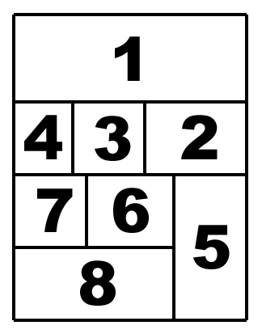

I MANGA
Li hai visti senza rendertene conto

Ti è mai capitato di notare molte autovetture di un certo modello solo dopo che tu o un tuo conoscente l'avete comprato, mentre prima non le vedevi neanche? Ecco, qui è proprio la stessa cosa. Se sei nato dagli anni 80’ in poi avrai sicuramente visto un anime in TV. Molto probabilmente anche senza rendertene conto. Hai presente quei cartoni animati che vedevi da piccolo su Italia Uno prima di andare a scuola: Saylor Moon, Holly e Benji, Dragon Ball e Rossana? Ecco, sono tutti anime di produzione giapponese, ma prima di parlare degli anime dobbiamo introdurre anche i manga.
Fumetti o manga?

I manga giapponesi sono il corrispondente dei fumetti in occidente, l’unica differenza è che sono prodotti in Giappone e sono disegnati con una tecnica particolare. Ti saranno sicuramente venuti in mente fumetti come Bat Man o gli Avengers ma stiamo parlando di due cose differenti, tuttavia per adesso soffermiamoci sulla loro storia.
La storia

Il termine manga (漫画) letteralmente vuol dire immagini derisorie e in Giappone identifica tutti i disegni realizzati sotto forma di fumetti.
La sua origine si colloca nel XVIII secolo e si esemplifica nel libro d’illustrazioni Shiji no yukikai di Santo Kyoden e nell’ Hyakujo di Aikawa Minwa:
siamo in piena epoca Edo, in un contesto dalla forte componente tradizionalista.
Il primo a usare il termine manga per definire alcune sue produzioni è stato, però, il celebre artista Hokusai, vissuto tra 1760 e 1849.
Nota: Manga non è l’unico vocabolo usato in Giappone per indicare il fumetto, sebbene sia quello di uso più comune: c’è anche toba-e e ponchi-e.
Come leggere un manga?
 Il contenuto dei manga, prima di essere pubblicato su quest’ultimi viene presentato su volumi di circa 200 pagine denominati tankōbon. Per alcuni esempi possiamo citare il Weekly Shounen Jump e il Shonen Magazine. Molto importante da sapere è che i manga, al contrario dei fumetti occidentali vanno letti da destra a sinistra incluse le tavole (vignette), che andranno lette come nella foto accanto.